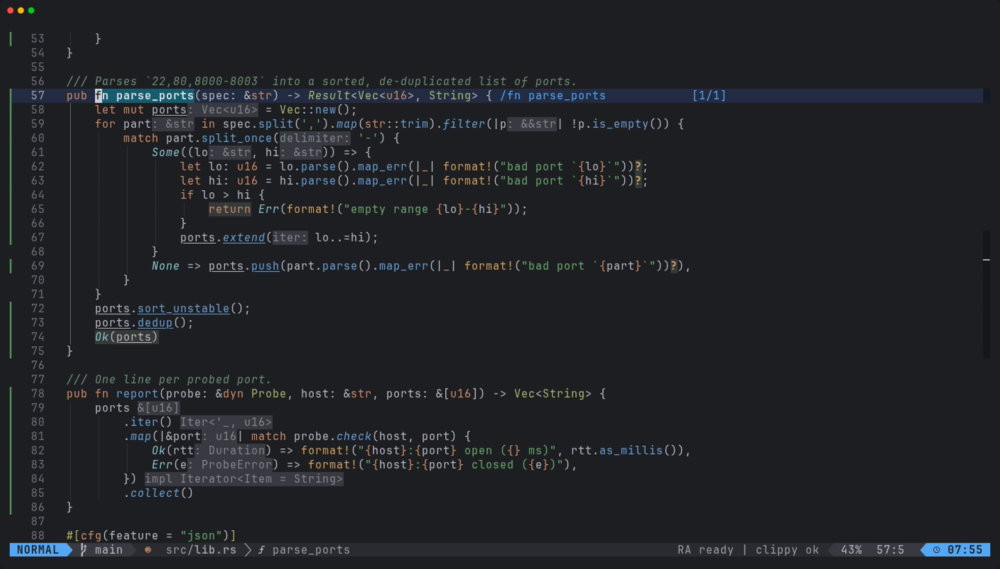
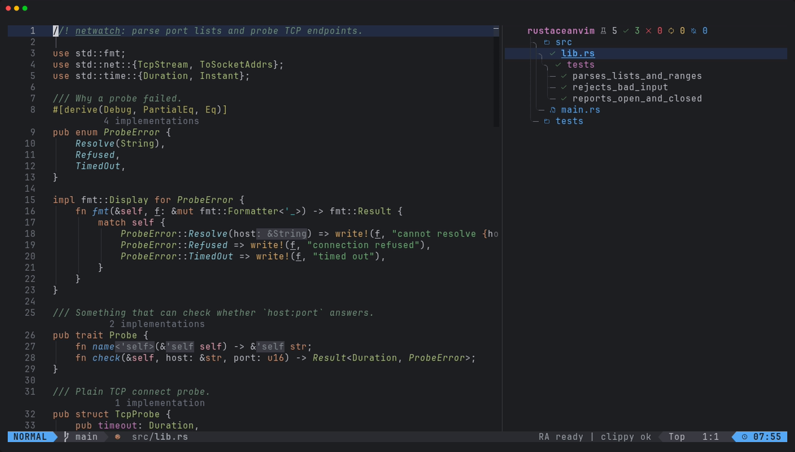

xynovim guide
Running Rust tests with coverage in Neovim
Running tests should not mean leaving the editor, and coverage should be a thing you look at, not a report you generate once a quarter. This guide shows the test workflow in xynovim, a personal Neovim configuration for Rust: neotest with the rustaceanvim adapter and cargo-nextest for results, and cargo-llvm-cov for line coverage in the gutter. It lists the keys, what each command actually runs, and where the setup has limits.


The pieces
- neotest with the rustaceanvim adapter provides the summary tree and per-test results.
- cargo-nextest is the runner behind it. It is optional, and its absence only costs this feature.
- cargo-llvm-cov and the
llvm-toolsrustup component produce coverage.:checkhealth xynovimchecks the component and names the keys that need each tool.
Install the two cargo tools with cargo, for example cargo install cargo-nextest cargo-llvm-cov --locked, and the component with rustup component add llvm-tools.
Keys
| Keys | What it does |
|---|---|
<leader>tr | run the nearest test |
<leader>tt | run the tests of the current file |
<leader>tT | run all tests |
<leader>ts | toggle the summary tree |
<leader>to | show the output of a test |
<leader>tw | watch: rerun on change |
<leader>tD | run the doc-tests |
<leader>tc | run with coverage and show it |
<leader>tg, <leader>tG | toggle the coverage signs, open the coverage summary |


Details that save time
- Doc-tests are separate. neotest cannot run doc-tests through nextest, so
<leader>tDruns plaincargo test --doc. - No progress bar noise. neotest runs nextest in a pseudo-terminal, where nextest drew its live progress bar and the redraws buried the failure text. The configuration sets
NEXTEST_HIDE_PROGRESS_BAR=1for nextest runs started from Neovim. - The same features as the diagnostics. The test and coverage runs use the Cargo features and target you chose with
:RustContext, so a test run does not rebuild with a different feature set than the one your diagnostics use. :RustTargets(<leader>rX) lists every binary, example, test and bench target of the workspace with run, test and build actions.
Coverage, on demand
<leader>tc runs cargo llvm-cov nextest --workspace --ignore-run-fail --lcov --output-path target/lcov.info in the workspace root, or plain cargo llvm-cov when nextest is not installed. It then loads the lcov file into nvim-coverage and shows the signs. Two choices are deliberate. The run is on demand only, never per auto-save, because an instrumented build is a separate target tree and takes as long as a full test run. And --ignore-run-fail is there because without it a single failing test aborts the run and no report is written. If tests did fail, you get a warning, and the report is still loaded.
Once loaded, the covered and uncovered lines are marked in the gutter. <leader>tg toggles the signs, and <leader>tG opens a summary table in an opaque float sized at 60 by 40 percent of the screen. The lcov file is reloaded automatically when it changes.
The configuration tests itself
The repository carries its own spec suite, one spec file per feature area, runnable with scripts/test.sh after a clone. It is the same idea turned inward: most of what this guide describes is covered by a spec (tests/COVERAGE.md lists what is not), and the specs that need cargo or rust-analyzer skip with a message when those are missing. The README has the current counts and the platform evidence.
Limits
- Coverage needs a full instrumented build, so the first
<leader>tcin a large workspace takes a while. - Line coverage only: there is no branch or region view in the gutter.
- Developed on Linux. The Windows and macOS CI runs skip the Rust-tool specs that need a full toolchain, so the test workflow is not demonstrated there.
Try it
Install the configuration, open the demo crate, press <leader>tT and then <leader>ts; after that try <leader>tc.
git clone https://github.com/xynorash/xynovim ~/.config/nvim # or ln -s <checkout> ~/.config/nvim
~/.config/nvim/scripts/bootstrap.shxynovim is a personal project: the home page has the tour, the install details and the platform status.